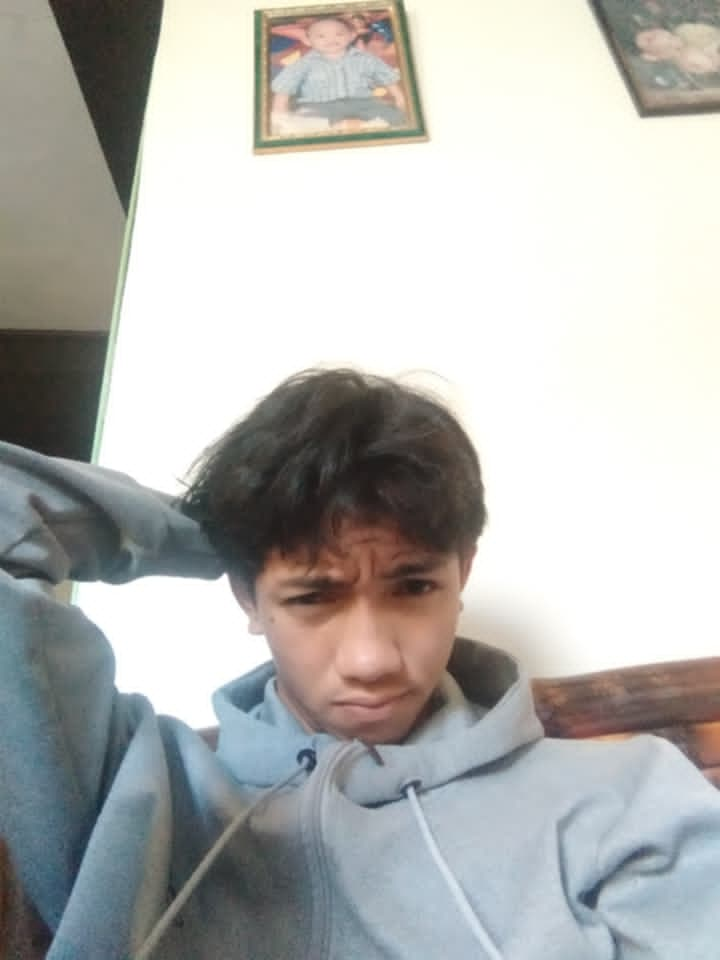

I'm a student with an interest in technology, creativity, and continuous learning.
I enjoy working on projects that challenge me and help me develop new skills.
Outside of school, I like gaming ,sports ,cooking , and spending time with friends and family.
There's a whole world and things to do and explore.I want to do all kinds of stuff that I
heven't done and do whatever I want without limitation.A known person one said
“The way to get started is to quit talking and begin doing.”-Walt Disney